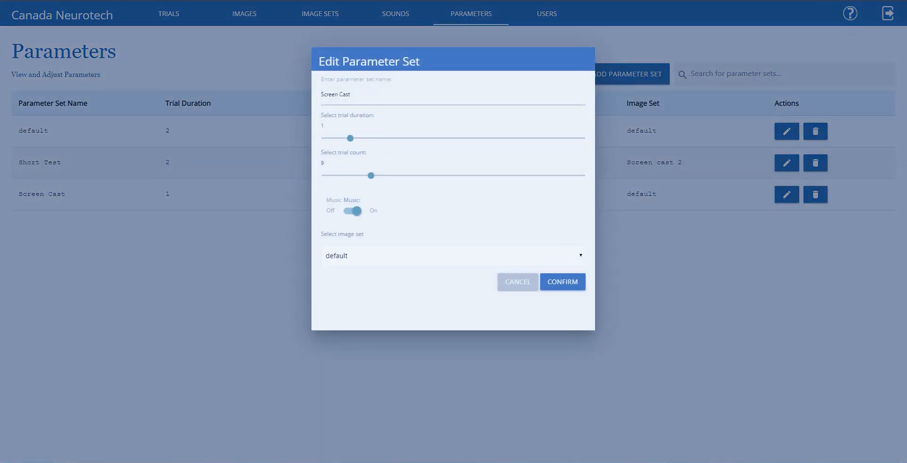
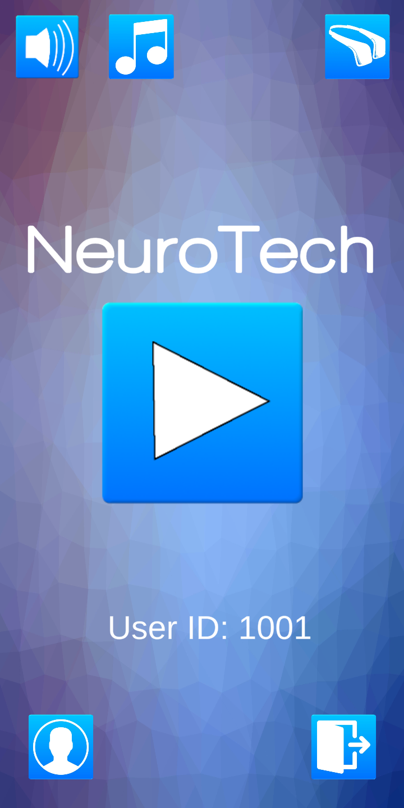
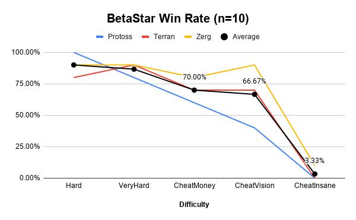

Here are a few projects I've made recently. Some were done for school while others simply for fun and gaining experience.
My most recent project has been making the classic game of Minesweeper with a few touch ups to improve the visual side of the original. I made the game through Unity in May 2020 as a solo project, it offers 3 different difficulties. The game includes music and sounds, as well as simple animations like this explosion one when a bomb is clicked.

The game has all functionalities as the original (marking cells as a flag or question mark, resetting the game by clicking the face, etc). The first click always opens a random number of cells around the selected one.

In Fall 2019 I created a mobile game and online database/dashboard with 3 other team members as part of a software engineering course project. The system was designed for a professor and her company NeuroTech Canada. It was designed to be used in a research setting, so many features of the system exist to make the researchers lives easier. The goal of the system is to provide an alternative to the expensive treatments of ADD, ADHD, and other such disorders for children aged ~4-6. The game connects with a Muse headband which reads the childs brainwaves which researchers can then interpret to determine when the child has been paying attention and when they aren't.
My role was primarily developing the game in Unity, and dealing with the large amount of data the headset sent back. I had to parse through all the data and format the important stuff into a csv file, which was then sent to the database for the researchers to access.
The game itself was very simple, the player was looking for a certain animal and colour, whenever that combination shows up on the screen the player clicks it. They only have a certain amount of time to do so, which is determined by which trial they're using. Trials are customized on the dashboard, and allow the researchers to customize how long the animals appear on screen, which images are used (they can upload their own if wanted), and how many animals are shown before the trial is over. The game automatically pulls these settings from the website and applies them.
 Since this was made for someone else I can't share the GitHub repo, however I'd be happy to provide more information if requested.
BetaStar is a StarCraft 2 AI made with 3 others as part of a video game AI course. It is a Protoss bot using a stalker rush strategy. It makes heavy use of the blink ability, to allow near dead stalkers to "blink" (teleport) to the back of the army, and continue attacking unharmed. We came up with a targeting algorithm for the stalkers that weights the type of unit, amount of health left, and distance to decide what to attack. Reinforcements are warped in close to the enemy base to decrease the distance they need to travel.
The bot performed well overall, and against the game bots was consistently able to beat easy and medium bots. It would win the majority of hard and very hard games as well, and only dropped below a 50% win rate for cheat insane difficulty . In our class tournament the bot finished 1st out of 9 bots with 36 wins, 1 draw, and 11 losses. Here is an example of BetaStar taking on a cheat money (AI gets unlimited resources) bot.